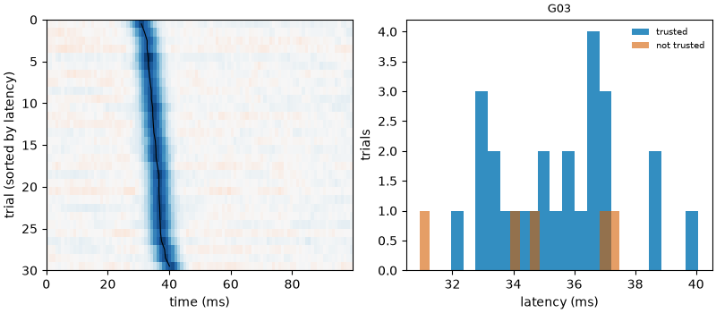
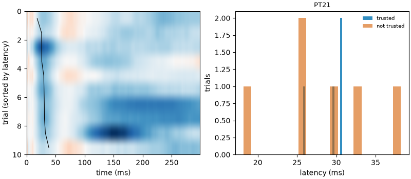

Note
Go to the end to download the full example code.
05: Trial by trial¶
Measure the N1 and the N2 in every trial, and tell a real change from noise.
Introduction¶
Until now we fitted the average of the trials: one curve per electrode. But the brain does not answer the same way to every pulse. The N1 can come a little earlier or later, be a little larger or smaller. How much it moves from trial to trial (its jitter) can tell something about the brain: how stable a connection is, or how its state changes over time.
There is a trap. A single trial is noisy, so its measured latency moves even when the brain does not: part of the variation we measure is made by the noise. Before saying “the N1 varies by 3 ms”, we must know how much the noise alone would give.
Here we:
fit every trial of made-up data where we know the truth, with no jitter;
do the same with a known jitter;
look at the N2, which is much harder to follow trial by trial;
go back to the real recording of tutorial 04.
# Import what we need
import numpy as np
from evoparam import plots, reports
from evoparam.io import read_bids
from evoparam.sim import simulate_ccep
from evoparam.trials import fit_trials, jitter
A small helper prints, for one bump, the jitter numbers that matter, in ms.
def show_jitter(trial_fits, label):
"""Print the measured jitter, the jitter of noise alone and the verdict, in ms."""
table = jitter(trial_fits, label)
for _, row in table.iterrows():
print(
f" {row['channel']} {label}: measured {1000 * row['jitter_sd']:.1f} ms, "
f"noise alone {1000 * row['jitter_sd_null']:.1f} ms -> {row['jitter_status']}"
)
Trials with no jitter¶
simulate_ccep makes CCEP trials like those of a real recording: an N1 and an N2,
plus noise that looks like brain activity. Here: 30 trials, one stimulated pair (G01-G02)
and one electrode that responds (G03). The response is exactly the same in every trial:
the true jitter is 0.
# 30 trials; the response does not move (jitter_sd=0)
trials_still, truth_still = simulate_ccep(
30, n_channels=3, p_response=1.0, p_n2=1.0, jitter_sd=0.0, artifact=False,
layout="grid", sfreq=1024.0, seed=1,
) # fmt: skip
print(trials_still)
<TrialSet | 30 trials × 3 channels × 1536 times, -0.500 – 0.999 s, 1024 Hz, uV, human, spes>
fit_trials first fits the average (as in the earlier tutorials), which gives the
bumps. Then it fits each trial with the same bumps, letting each one move a little
in time and change height. It gives back one latency and one amplitude per bump and
per trial.
max_shift is how far a bump may move, in seconds. By default it is a quarter of the
bump’s width, which is small for a narrow N1 (about 1.5 ms here). We allow 10 ms, to be
sure that a real jitter is not cut. (More on this below.)
fits_still = fit_trials(trials_still, preset="ccep", max_shift=0.01, random_state=0)
# One row per trial and per bump
table = fits_still.to_dataframe()
print(table[table["label"] == "N1"][["trial", "latency", "amplitude", "r2"]].head().round(4))
trial latency amplitude r2
0 0 0.0352 -486.0886 0.9526
2 1 0.0353 -461.6863 0.9128
4 2 0.0354 -443.3336 0.9408
6 3 0.0353 -450.4503 0.9396
8 4 0.0352 -449.2218 0.9177
The latency still changes a little from trial to trial, although the truth does not: that is the noise.
jitter sums it up. It gives:
jitter_sd: the measured jitter, the standard deviation (the usual spread) of the latencies over the trials;jitter_sd_null: the jitter that noise alone gives. evoparam makes it by adding pieces of made-up noise, with the same level and the same rhythm as the baseline, to the average curve, and measuring them like trials;jitter_status: the verdict. The jitter is"measured"only when it is clearly larger than the noise alone (1.2 times larger, and larger than chance). Otherwise it is"not measurable (< x ms)", where x is the smallest real jitter that could be seen with these trials and this noise.
show_jitter(fits_still, "N1")
G03 N1: measured 0.1 ms, noise alone 0.1 ms -> not measurable (< 0.1 ms)
The measured jitter of the N1 is no larger than what noise gives, so evoparam does not claim a jitter. And it says how small a jitter it could have seen: about 0.1 ms. This N1 is large (−456 µV) and narrow, so its timing is very precise in every trial.
Trials with a known jitter¶
Now the same electrode, but each trial is moved in time by a random amount: a true
jitter of about 2 ms (jitter_sd=0.002, in seconds).
trials_moving, truth_moving = simulate_ccep(
30, n_channels=3, p_response=1.0, p_n2=1.0, jitter_sd=0.002, artifact=False,
layout="grid", sfreq=1024.0, seed=1,
) # fmt: skip
true_shift = np.asarray(truth_moving.shift)[:, 0]
print(f"true jitter: {1000 * true_shift.std():.2f} ms")
fits_moving = fit_trials(trials_moving, preset="ccep", max_shift=0.01, random_state=0)
show_jitter(fits_moving, "N1")
true jitter: 2.11 ms
G03 N1: measured 2.1 ms, noise alone 0.2 ms -> measured
This time the jitter is "measured": 2.1 ms, the true value, far above the 0.2 ms of
noise alone.
The figure shows the trials of G03, sorted by the latency of their N1 (left: one row
per trial, colour = voltage, blue = negative; the dark line marks the N1 of each trial),
and how the latencies spread (right). We draw only 0 to 100 ms
(select(tmin=..., tmax=...)), so that the N1 is easy to see.
fig = plots.plot_trials(fits_moving, trials_moving.select(tmin=0.0, tmax=0.1), channel="G03")

Note
Run the same fit without max_shift=0.01: with the default (a quarter of the
width, about 1.5 ms here), the N1 can not move far enough, the trials that reach
the limit are not trusted, and the jitter comes out near 1.2 ms instead of 2.1.
When you expect the latency to move more than a quarter of the width of the bump,
give max_shift yourself, and write it in the methods.
The N2¶
The made-up N2 moves with the N1: same 2 ms jitter. But look at what evoparam can say about it.
show_jitter(fits_moving, "N2")
G03 N2: measured 5.0 ms, noise alone 5.1 ms -> not measurable (< 5.0 ms)
For the N2, noise alone already gives about 5 ms of jitter, more than the true 2 ms.
So the verdict is "not measurable (< 5 ms)": a real jitter of the N2 smaller than
about 5 ms can not be seen with these 30 trials.
This is not a fault of the N2 fit. The N2 is broad (about 80 ms wide here, against 6 ms for the N1) and smaller (−72 µV against −456 µV). The top of a broad, low bump is flat, so a little noise is enough to move it. The same is true of any method: the latency of a broad bump in a single trial is never precise.
For the N2, the amplitude of each trial is often more useful than its latency; the average of the trials is still the place to measure its latency.
Back to the real recording¶
We read again the 10 pulses of tutorial 04 (patient UMCU01, pair PT13-PT14) and run the
preset’s chain with reports.run_pipeline. Then we fit the trials of two electrodes
that respond: PT07 and PT21. select(picks=...) keeps only them, which is faster.
site = "PT13-PT14"
picks = [f"PT{number:02d}" for number in range(1, 49) if f"PT{number:02d}" not in site]
trials = read_bids(
"ds004080",
"ccepAgeUMCU01",
session="1",
task="SPESclin",
run="021448",
remote=True,
select={"stim_site": site},
picks=picks,
epoch=(-1.0, 1.0),
)
result = reports.run_pipeline(trials, "ccep", random_state=0, trial_fits=False)
# The cleaned trials of two electrodes, fitted one by one
two = result.trials.select(picks=["PT07", "PT21"])
real_fits = fit_trials(two, preset="ccep", random_state=0)
show_jitter(real_fits, "N1")
show_jitter(real_fits, "N2")
# The 10 trials of PT21, sorted by the latency of their N1
fig = plots.plot_trials(real_fits, two.select(tmin=0.0, tmax=0.3), channel="PT21")

PT07 N1: measured 1.9 ms, noise alone 1.7 ms -> not measurable (< 2.5 ms)
PT21 N1: measured 2.3 ms, noise alone 1.6 ms -> not measurable (< 2.8 ms)
PT07 N2: measured 22.9 ms, noise alone 12.2 ms -> measured
PT21 N2: measured 26.9 ms, noise alone 29.7 ms -> not measurable (< 52.1 ms)
On PT21, most trials are marked not trusted (orange). A trial is trusted when its fit
follows it well (r² of 0.2 or more) and its bump did not stop at the limit of
max_shift. Untrusted trials keep their numbers, but they are left out of the
jitter: here only 4 trials of 10 are used.
With only 10 trials, the verdict is mostly “not measurable”:
for the N1, noise alone gives about 2 ms of jitter, and a real jitter smaller than about 3 ms could not be seen;
for the N2, the limit is tens of ms on PT21. On PT07, the N2 jitter is larger than noise alone and comes out
"measured", but with 10 trials, read it as a hint, not a result.
This is the usual case with clinical CCEPs, where each pair is often stimulated 10 times. To measure jitter, more trials are needed: the smallest measurable jitter goes down roughly with the square root of the number of trials.
Note
run_pipeline also fits every trial when trial_fits is not given (the
"ccep" preset asks for it): the result is then in result.trial_fits, for
all the electrodes, and takes about a minute here.
Conclusion¶
fit_trials measures the latency and amplitude of each bump in each trial, and
jitter says whether the change from trial to trial is larger than what noise alone
gives. Always read jitter_status before reporting a jitter: “not measurable (< x ms)”
is a result too, it says the jitter is smaller than x ms, or that there are not enough
trials to see it. The narrow, large N1 can be followed trial by trial; the broad, small
N2 much less.
Total running time of the script: (0 minutes 57.383 seconds)